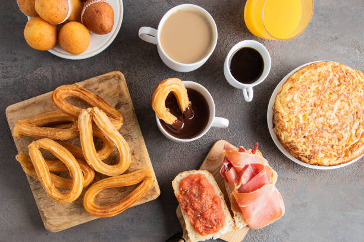
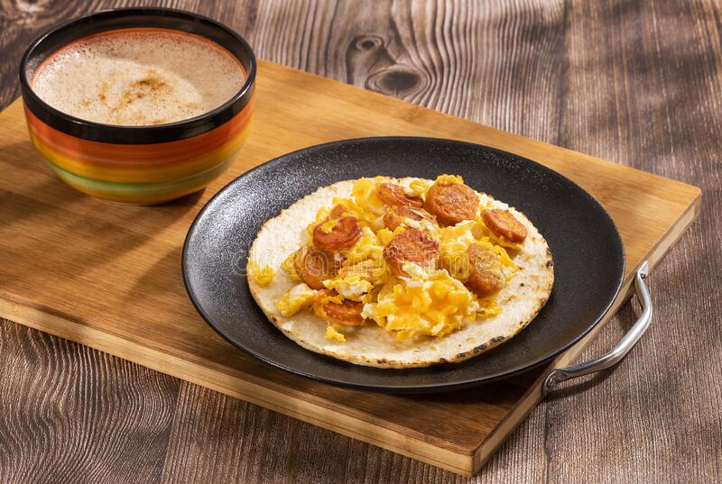

Nella cultura mediterranea consideriamo la colazione il pasto più importate; ma nel resto del pianeta i gusti mattutini cambiano molto in base alla cultura e alle tradizioni.
Italia
La colazione consiste in una bevanda come caffè, tè accompagnata da brioches o biscotti.

Francia
La “Petit déjeuner” è composta da una bevanda accompagnata da pane e burro, croissant o brioche alla confettura.

Spagna
Qui la colazione si chiama desayuno e consiste in genere in café con leche (caffellatte) con varie portate possibili, dolci e salate.
Germania
La “frühstück” vede la presenza dei wurst locali, e quindi di salsiccia e altre carni.
Inghilterra
Colazione salata protagonista anche della tipica “breakfast”che comprende uova salsiccia e una tazza di tè.
Grecia
Può includere uova sode, salumi e pane, ma anche dolcetti e soprattutto il tradizionale yogurt greco denso.
America
La breakfast americana può prevedere cibi sia dolci che salati. Nel sud possiamo gustare Tortillas, Caldos o le Arepas.
Asia
In Malesia il cibo più amato è il nasi lemak. In Cina si punta su piatti ricchi come il dim sum. In India tra i piatti tipici c’è l’upma.
Africa
In Marocco si fa colazione con tè alla menta e i baghrir. In Tunisia si preferisce una colazione salata con lablabi.